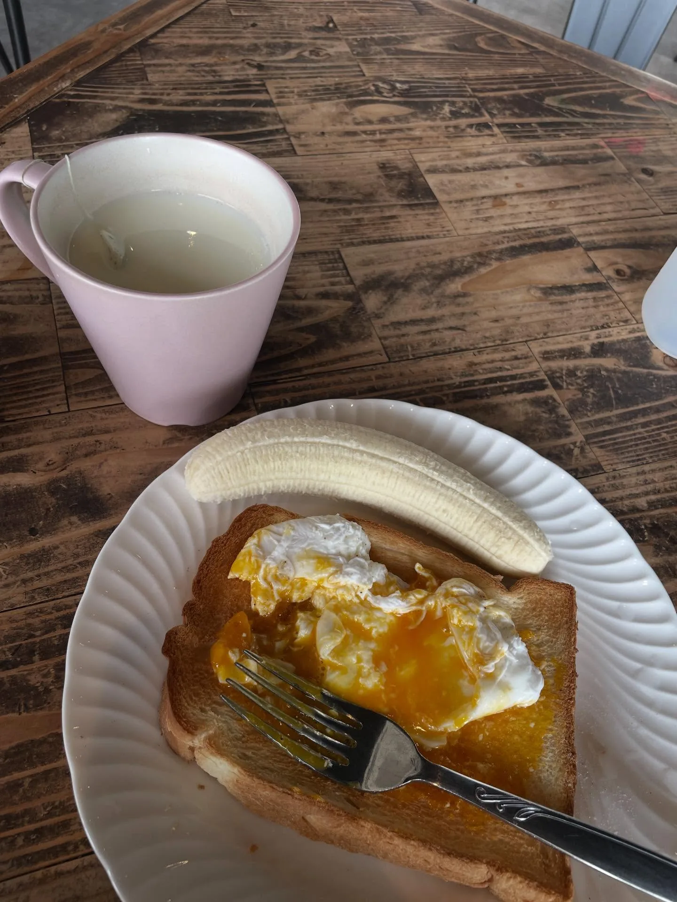
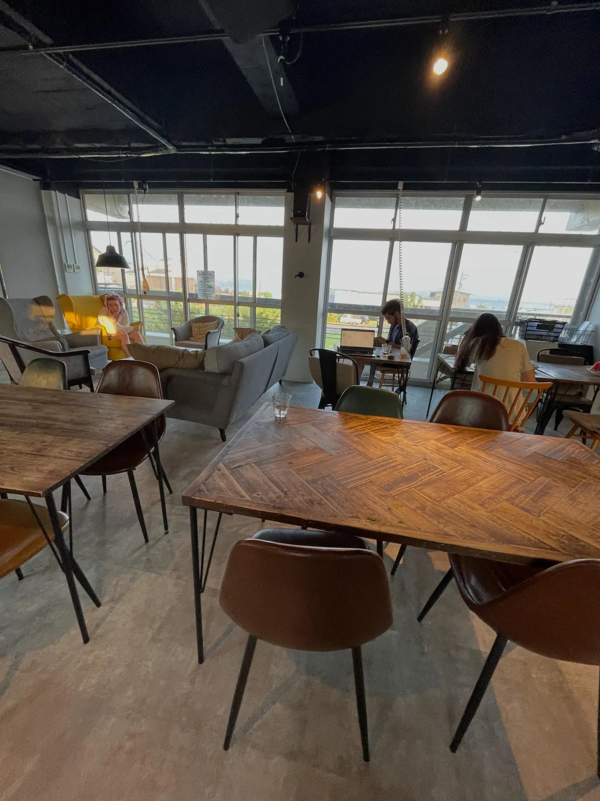
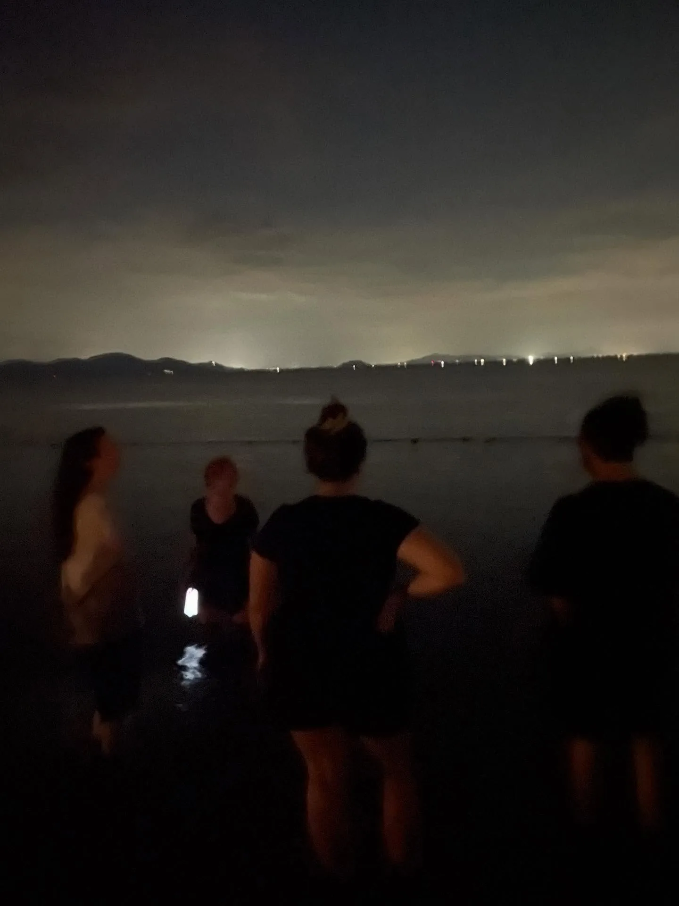
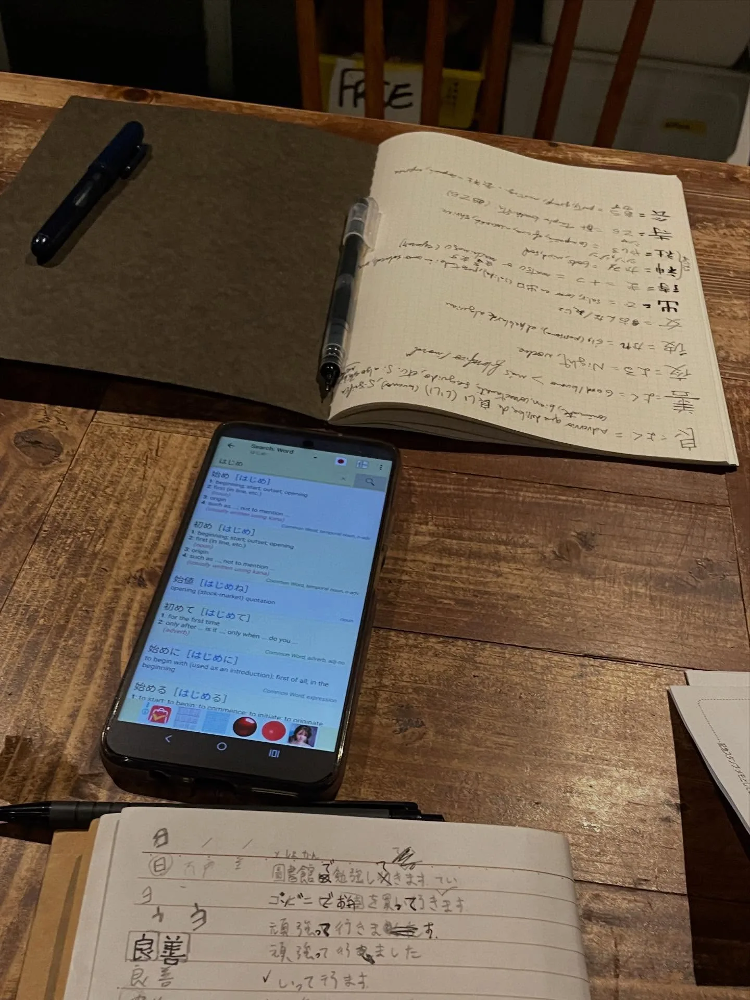
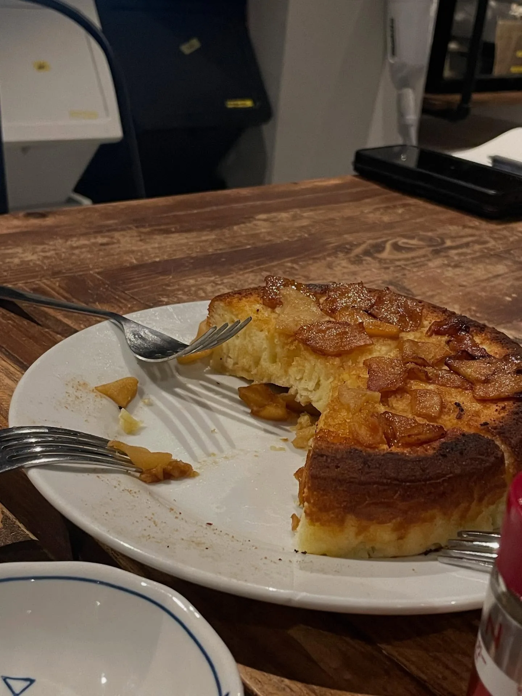
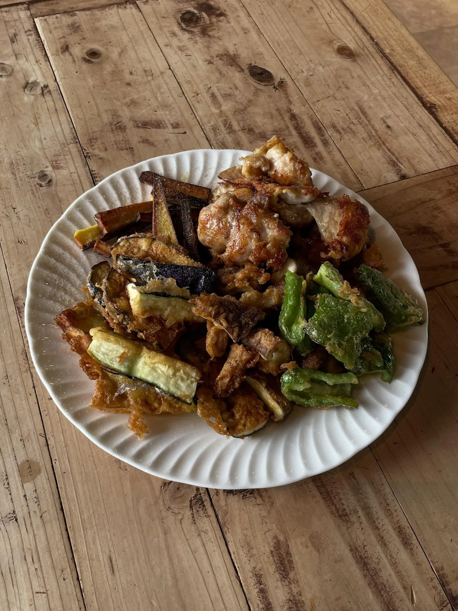
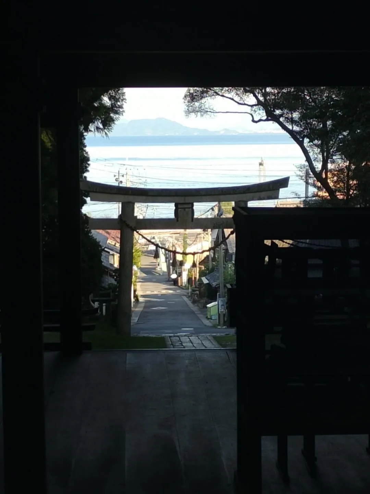

打工換宿：琵琶湖東側的民宿，只說英文的八月
終於迎來第一個真正的換宿！一整個八月，都在琵琶湖邊的渡假民宿度過，距離湖邊步行只要 2 分鐘，近到午後去游泳、弄得溼答答之後，可以直接走回去舒服地洗個澡。湖水總是很平靜，大概除了下暴雨的日子，都適合下去游泳、泡泡水。
騎腳踏車半小時去超市，是我在這裡最常有的行程，右手邊是山、左手邊是水，完全不覺得痛苦乏味。整個八月我都喜歡這樣悠閒地騎車亂晃，山景與湖景一次滿足，很簡單，很喜歡。
每週工作 4 天、每天 4 小時，負責整理房間、打掃衛生。民宿最多可以容納 80 個客人，而暑假又是度假旺季，有時會非常忙碌。在勞力活當中，我深刻理解到「糖」是不可或缺的東西，以及早餐吃飽飽的重要。

一句中文都不說的八月
換宿的小幫手同時大約有4–5位，來自智利、法國、阿根廷、德國，第一次這麼長時間一句中文都不說，只說英文。很幸運大家都很 NICE：熱愛柔道與布料的智利人 Fabs，後面會再提到；阿根廷人 Catalina 是正職，年紀小我一點卻很有姐姐感，人很罩；法國人 Sarah 很活潑，講話像機關槍一樣說起故事活靈活現，還教了不會游泳的我仰漂；而月中加入、愛看小說的德國人 Betina，後來還有來台灣住我家，就是後話了～

或許因為住的是青旅那種小小的宿舍床位，大家通常在公共空間活動，幾乎每天固定從晚餐時間一起閒聊到睡覺時間。很快我的英文程度開始跟不上，於是在每天一小時的悠閒早餐時間，我會配著 AI 詢問前一晚閒聊時各種講不出來的英文該怎麼說……不這麼做的話，我會為了想講講不出來而感到焦慮啊～～
也和大家一起在湖邊玩仙女棒、做晚餐、看電影。

同期的好夥伴Fabs
這段時間剛好有比較多台灣的工作要處理，所以沒怎麼出去遊玩。Fabs 也有一些工作要處理，我們是一起在電腦前戰鬥的夥伴，又因為是同一天抵達的同期，最常相約一起行動（比如去市役所辦地址轉入……）。也有一段時間，我們會在晚餐之後一起學日文（後來太累了而默默終止了哈哈），印象最深的是他抱怨漢字的筆畫順序，作為母語使用者我無感並無能為力哈哈。

他是我第一個南美洲朋友，聽他分享有關他的國家文化、生長環境，對我而言始終都帶有一種神祕感。後來 10 月，我們居然在姬路車站轉車時巧遇，非常神奇的緣分！
我還帶 Fabs 去附近有台灣早餐的餐廳，吃了蛋餅、飯糰、胡椒餅；但餐廳的蛋餅還原度不夠台灣，於是我自己做了蛋餅給大家吃（第一次做了「酥油」這種東西！），還有自己做的台式泡菜（加入日本傳統的醃梅干，增加了滋味的層次，很讚）。


著名景點：白鬚神社
佇立在湖中、神聖感滿滿的鳥居，但看到一旁就有成群玩水、玩 SUP 的人，畫風非常衝突XD
備忘
- 距 JR 近江高島站 3 公里，可以在車站租借腳踏車。
著名活動：納涼船幸祭
夏天看煙火是一定要的！這是建部大社三大祭典之一，每年 8 月 17 日在瀨田川舉行，是十分特別的水上祭典。我第一次看到御神轎是乘船移動的，很特別；瀨田川沿岸、建部大社附近都有夜市攤位，超長的夜市攤位加上很多人穿著浴衣來參與，日本夏季祭典感濃厚。資料說約有三萬人，體感真的是摩肩接踵的程度……只是我對煙火的精采程度感到失望…QQ
備忘
- 鄰近京阪電車唐橋前站。
- 唐橋公園有看不到盡頭的夜市攤位；我們站在公園靠瀨田唐橋附近，跟其他日本人一起人擠人。
- 我們計畫結束後跟著人潮一起前往神社（建部大社），因而選擇這個位置，不曉得有沒有更好的位置。
私房景點：樹下神社
和 Fabs 騎腳踏車探索附近的神社時，在名不見經傳的神社看到了至今最美的鳥居景色——一條平直的小路直通開闊的琵琶湖，面湖與遠方山景映入眼簾。（照片感謝 Fabs 支援，我一張照片也沒拍，後來去其他神社屢屢想起這裡，後悔莫及。）

備忘
- JR 志賀站步行 10 分鐘，一生推！神社朝正東方，日出肯定美得不可思議吧！
- 這個區域有好幾個同名的神社，別去錯地方囉。
謝謝陪伴！
延伸閱讀：〈日本打工度假的一年：出發前的準備、支出花費，和不打工的生活方式〉（2026-08-31）
關鍵字滋賀大津琵琶湖打工換宿白鬚神社樹下神社納涼船幸祭建部大社
留言
電子郵件不會公開，只用來辨識留言者。第一次留言會先經過審核，之後同一個電子郵件的留言會直接顯示。本留言區以 Cloudflare Turnstile 防止垃圾留言。